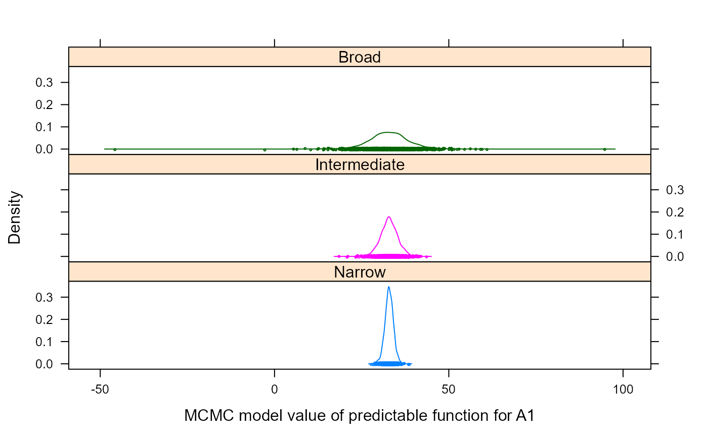

Split-plot experiment of simulated data
stroup.splitplot.RdA simulated dataset of a very simple split-plot experiment, used to illustrate the details of calculating predictable functions (broad space, narrow space, etc.).
For example, the density of narrow, intermediate and broad-space
predictible function for factor level A1 is shown below (html help only)

Format
ysimulated response
repreplicate, 4 levels
bsub-plot, 2 levels
awhole-plot, 3 levels
Source
Walter W. Stroup, 1989. Predictable functions and prediction space in the mixed model procedure. Applications of Mixed Models in Agriculture and Related Disciplines.
Used with permission of Walt Stroup.
References
Wolfinger, R.D. and Kass, R.E., 2000. Nonconjugate Bayesian analysis of variance component models, Biometrics, 56, 768--774. http://doi.org/10.1111/j.0006-341X.2000.00768.x
Examples
library(agridat) data(stroup.splitplot) dat <- stroup.splitplot # ----------------------------------------------------------------------------# ---- lme4 ----- libs(lme4) m0 <- lmer(y~ -1 + a + b + a:b + (1|rep) + (1|a:rep), data=dat) # No predict function # ----- nlme ----- libs(nlme) m0 <- lme(y ~ -1 + a + b + a:b, data=dat, random = ~ 1|rep/a) # ----- ASREML model ----- libs(asreml) m1 <- asreml(y~ -1 + a + b + a:b, random=~ rep + a:rep, data=dat)#> ASReml: Fri Aug 16 15:02:27 2019 #> #> LogLik S2 DF wall cpu #> -50.5227 54.2060 18 15:02:27 0.0 #> -47.0099 23.4102 18 15:02:27 0.0 #> -44.8598 14.0907 18 15:02:27 0.0 #> -43.6235 10.6700 18 15:02:27 0.0 #> -43.3658 9.7122 18 15:02:27 0.0 #> -43.3405 9.4044 18 15:02:27 0.0 #> -43.3400 9.3621 18 15:02:27 0.0 #> -43.3400 9.3611 18 15:02:27 0.0 #> #> Finished on: Fri Aug 16 15:02:27 2019 #> #> LogLikelihood Converged#> effect component std.error z.ratio constr #> rep!rep.var 62.4 56.54 1.1 P #> a:rep!a.var 15.38 11.79 1.3 P #> R!variance 9.361 4.413 2.1 P## effect component std.error z.ratio bound <!-- %ch --> ## rep 62.4 56.54 1.1 P 0 ## a:rep 15.38 11.79 1.3 P 0 ## units(R) 9.361 4.413 2.1 P 0 # Narrow space predictions predict(m1, data=dat, classify="a", average=list(rep=NULL))$predictions$pvals#> ASReml: Fri Aug 16 15:02:28 2019 #> #> LogLik S2 DF wall cpu #> -43.3400 9.3611 18 15:02:28 0.0 #> -43.3400 9.3611 18 15:02:28 0.0 #> -43.3400 9.3611 18 15:02:28 0.0 #> -43.3400 9.3611 18 15:02:28 0.0 #> #> Finished on: Fri Aug 16 15:02:28 2019 #> #> LogLikelihood Converged#> #> Notes: #> - The predictions are obtained by averaging across the hypertable #> calculated from model terms constructed solely from factors in #> the averaging and classify sets. #> - Use "average" to move ignored factors into the averaging set. #> #> - The SIMPLE averaging set: b rep #> #> a predicted.value standard.error est.status #> 1 a1 32.875 1.08173 Estimable #> 2 a2 34.125 1.08173 Estimable #> 3 a3 25.750 1.08173 Estimable# a Predicted Std Err Status # a1 32.88 1.082 Estimable # a2 34.12 1.082 Estimable # a3 25.75 1.082 Estimable # Intermediate space predictions predict(m1, data=dat, classify="a", ignore=list("a:rep"), average=list(rep=NULL))$predictions$pvals#> ASReml: Fri Aug 16 15:02:28 2019 #> #> LogLik S2 DF wall cpu #> -43.3400 9.3611 18 15:02:28 0.0 #> -43.3400 9.3611 18 15:02:28 0.0 #> -43.3400 9.3611 18 15:02:28 0.0 #> -43.3400 9.3611 18 15:02:28 0.0 #> #> Finished on: Fri Aug 16 15:02:28 2019 #> #> LogLikelihood Converged#> #> Notes: #> - The predictions are obtained by averaging across the hypertable #> calculated from model terms constructed solely from factors in #> the averaging and classify sets. #> - Use "average" to move ignored factors into the averaging set. #> #> - The SIMPLE averaging set: b rep #> - a:b is included in the prediction #> - b is included in the prediction #> - a is included in the prediction #> - a:rep is ignored in this prediction #> #> a predicted.value standard.error est.status #> 1 a1 32.875 2.239559 Estimable #> 2 a2 34.125 2.239559 Estimable #> 3 a3 25.750 2.239559 Estimable# a Predicted Std Err Status # a1 32.88 2.24 Estimable # a2 34.12 2.24 Estimable # a3 25.75 2.24 Estimable # Broad space predictions predict(m1, data=dat, classify="a")$predictions$pvals#> ASReml: Fri Aug 16 15:02:28 2019 #> #> LogLik S2 DF wall cpu #> -43.3400 9.3611 18 15:02:28 0.0 #> -43.3400 9.3611 18 15:02:28 0.0 #> -43.3400 9.3611 18 15:02:28 0.0 #> -43.3400 9.3611 18 15:02:28 0.0 #> #> Finished on: Fri Aug 16 15:02:28 2019 #> #> LogLikelihood Converged#> #> Notes: #> - The predictions are obtained by averaging across the hypertable #> calculated from model terms constructed solely from factors in #> the averaging and classify sets. #> - Use "average" to move ignored factors into the averaging set. #> #> - The SIMPLE averaging set: b #> - The ignored set: rep #> #> a predicted.value standard.error est.status #> 1 a1 32.875 4.540329 Estimable #> 2 a2 34.125 4.540329 Estimable #> 3 a3 25.750 4.540329 Estimable# a Predicted Std Err Status # a1 32.88 4.54 Estimable # a2 34.12 4.54 Estimable # a3 25.75 4.54 Estimable # ----- Mcmcglmm model ----- # Use the point estimates from REML with a prior distribution libs(MCMCglmm)#>#> #>#> #> #>#>#> #> #>#> #>#> #> #>#> #> #>prior2 = list( G = list(G1=list(V=62.40, nu=1), G2=list(V=15.38, nu=1)), R = list(V = 9.4, nu=1) ) m2 <- MCMCglmm(y~ -1 + a + b + a:b, random=~ rep + a:rep, data=dat, pr=TRUE, # save random effects as columns of 'Sol' nitt=23000, # double the default 13000 prior=prior2, verbose=FALSE) # Now create a matrix of coefficients for the prediction. # Each column is for a different prediction. For example, # the values in the column called 'a1a2n' are multiplied times # the model coefficients (identified at the right side) to create # the linear contrast for the the narrow-space predictions # (also called adjusted mean) for the a1:a2 interaction. # a1n a1i a1b a1a2n a1a2ib cm <- matrix(c( 1, 1, 1, 1, 1, # a1 0, 0, 0, -1, -1, # a2 0, 0, 0, 0, 0, # a3 1/2, 1/2, 1/2, 0, 0, # b2 0, 0, 0, -1/2, -1/2, # a2:b2 0, 0, 0, 0, 0, # a3:b2 1/4, 1/4, 0, 0, 0, # r1 1/4, 1/4, 0, 0, 0, # r2 1/4, 1/4, 0, 0, 0, # r3 1/4, 1/4, 0, 0, 0, # r4 1/4, 0, 0, 1/4, 0, # a1r1 0, 0, 0, -1/4, 0, # a2r1 0, 0, 0, 0, 0, # a3r1 1/4, 0, 0, 1/4, 0, # a1r2 0, 0, 0, -1/4, 0, # a2r2 0, 0, 0, 0, 0, # a3r2 1/4, 0, 0, 1/4, 0, # a1r3 0, 0, 0, -1/4, 0, # a2r3 0, 0, 0, 0, 0, # a3r3 1/4, 0, 0, 1/4, 0, # a1r4 0, 0, 0, -1/4, 0, # a2r4 0, 0, 0, 0, 0), # a3r4 ncol=5, byrow=TRUE) rownames(cm) <- c("a1", "a2", "a3", "b2", "a2:b2", "a3:b2", "r1", "r2", "r3", "r4", "a1r1", "a1r2", "a1r3", "a1r4", "a2r1", "a2r2", "a2r3", "a2r4", "a3r1", "a3r2", "a3r3", "a3r4") colnames(cm) <- c("A1n","A1i","A1b", "A1-A2n", "A1-A2ib") print(cm)#> A1n A1i A1b A1-A2n A1-A2ib #> a1 1.00 1.00 1.0 1.00 1.0 #> a2 0.00 0.00 0.0 -1.00 -1.0 #> a3 0.00 0.00 0.0 0.00 0.0 #> b2 0.50 0.50 0.5 0.00 0.0 #> a2:b2 0.00 0.00 0.0 -0.50 -0.5 #> a3:b2 0.00 0.00 0.0 0.00 0.0 #> r1 0.25 0.25 0.0 0.00 0.0 #> r2 0.25 0.25 0.0 0.00 0.0 #> r3 0.25 0.25 0.0 0.00 0.0 #> r4 0.25 0.25 0.0 0.00 0.0 #> a1r1 0.25 0.00 0.0 0.25 0.0 #> a1r2 0.00 0.00 0.0 -0.25 0.0 #> a1r3 0.00 0.00 0.0 0.00 0.0 #> a1r4 0.25 0.00 0.0 0.25 0.0 #> a2r1 0.00 0.00 0.0 -0.25 0.0 #> a2r2 0.00 0.00 0.0 0.00 0.0 #> a2r3 0.25 0.00 0.0 0.25 0.0 #> a2r4 0.00 0.00 0.0 -0.25 0.0 #> a3r1 0.00 0.00 0.0 0.00 0.0 #> a3r2 0.25 0.00 0.0 0.25 0.0 #> a3r3 0.00 0.00 0.0 -0.25 0.0 #> a3r4 0.00 0.00 0.0 0.00 0.0# post2 <- as.mcmc(m2$Sol <!-- %*% cm) --> post2 <- as.mcmc(crossprod(t(m2$Sol), cm)) # Following table has columns for A1 estimate (narrow, intermediate, broad) # A1-A2 estimate (narrow and intermediat/broad). # The REML estimates are from Stroup 1989. est <- rbind("REML est"=c(32.88, 32.88, 32.88, -1.25, -1.25), "REML stderr"=c(1.08, 2.24, 4.54, 1.53, 3.17), "MCMC mode"=posterior.mode(post2), "MCMC stderr"=apply(post2, 2, sd)) round(est,2)#> A1n A1i A1b A1-A2n A1-A2ib #> REML est 32.88 32.88 32.88 -1.25 -1.25 #> REML stderr 1.08 2.24 4.54 1.53 3.17 #> MCMC mode 33.07 32.90 31.33 -1.50 -1.61 #> MCMC stderr 1.23 2.76 6.26 1.75 3.92# A1n A1i A1b A1-A2n A1-A2ib # REML est 32.88 32.88 32.88 -1.25 -1.25 # REML stderr 1.08 2.24 4.54 1.53 3.17 # MCMC mode 32.95 32.38 31.96 -1.07 -1.17 # MCMC stderr 1.23 2.64 5.93 1.72 3.73 post22 <- make.groups(Narrow=post2[,1], Intermediate=post2[,2], Broad=post2[,3]) print(densityplot(~data|which, data=post22, groups=which, cex=.25, lty=1, layout=c(1,3), xlab="MCMC model value of predictable function for A1"))